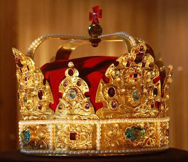

Скіпетр, держава і корона ставали неодноразово об’єктами обговорення західних ЗМІ. І правда, адже вони мають особливу цінність.
Що говорити: адже одна тільки корона – це єдиний у світовій історії знак верховної влади отриманий православним князем від римського католицького престолу Святого Петра. Ніяких припущень про їх існування так і не виявилося.